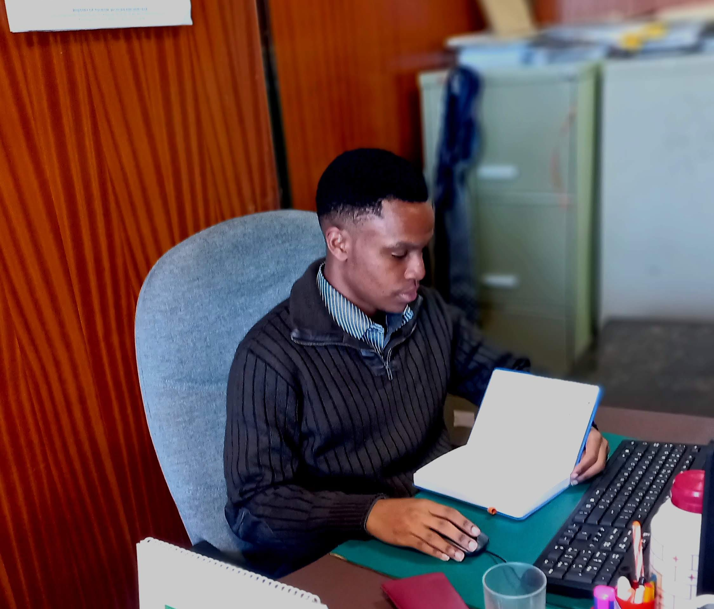

Emmanuel Mwabili | IT Support Analyst | Web Developer

Location: Nairobi,
Telephone: +254796410030
Proffesional Experience
As an IT Support and Web Developer with extensive professional experience, I bring a diverse skill set and a proven track record in delivering high-quality solutions. My journey in the field began with a strong foundation in computer science, and over the years, I have honed my skills to become a versatile professional adept at handling a wide range of IT and web development tasks.
Core Skills
- Web Development
- IT Support
- Full Stack Development
- Project Management
Career Summary
Key Responsibilities
Web Application Development
- Developed and maintained numerous web applications, ranging from e-commerce platforms to content management systems.
- Implemented secure authentication and authorization mechanisms to protect user data.
IT Infrastructure Management
- Administered and maintained servers, ensuring high availability and optimal performance.
- Conducted regular security audits and implemented measures to safeguard against cyber threats.
Client Interaction
- Collaborated closely with clients to understand their business requirements and translate them into technical specifications.
- Provided ongoing support and updates post-deployment, fostering long-term client relationships.
Education Background
- Dagoretti High School (2018-2021)
- Equip East Africa Institute (1 year)
- Nairobi Technical Training Institute
- St.John Ambulance Cadet